S19A / 完成候选 r2 / 2026.10.11
左侧为本地候选，右侧为已发布静态基线。人物原部件与涂装保持，普通行走跟随原路线；转弯采用受限视觉变换，碰撞与操作控制根保持。
36秒、12段真实Kit对照。原W1路线使用保存的12点/40.4m/1m每秒；视频中的加速回放不改变生产工时。姿态矩阵采用独立审阅副本，生产路径和布局保持。
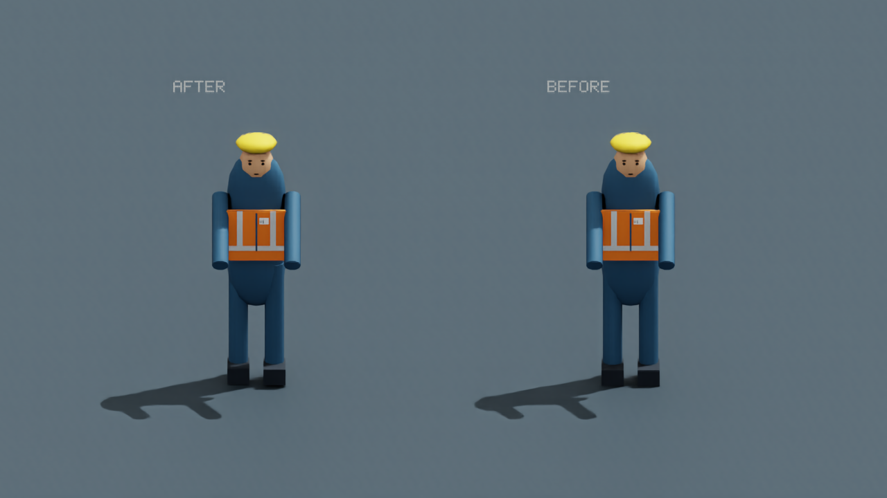
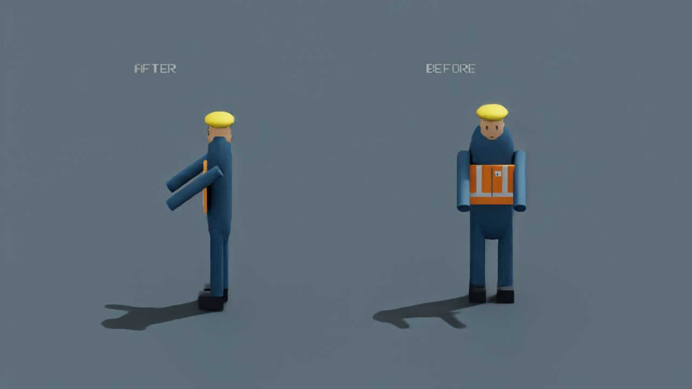
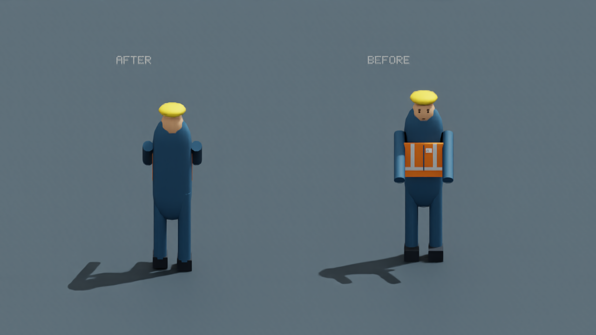
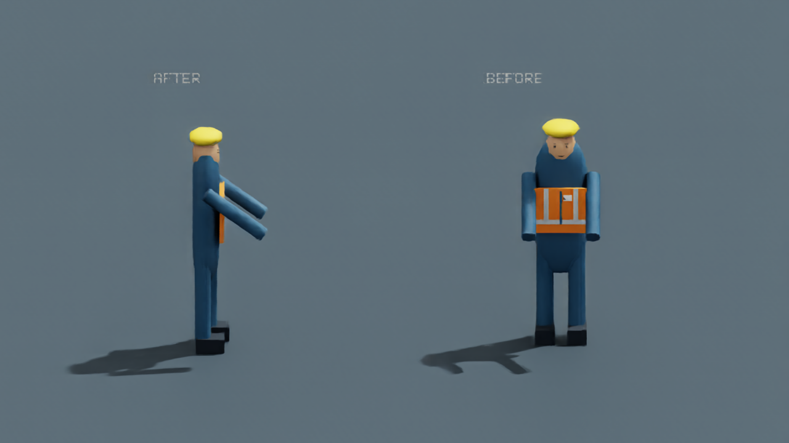
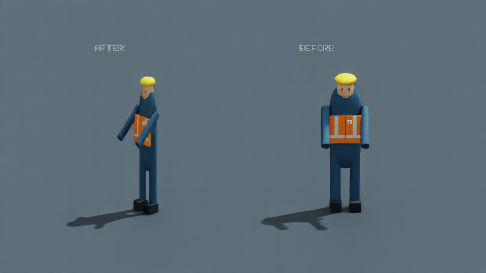
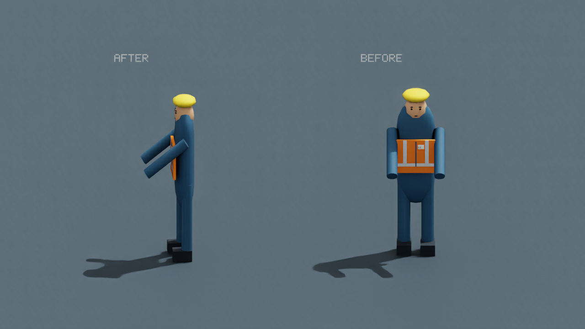
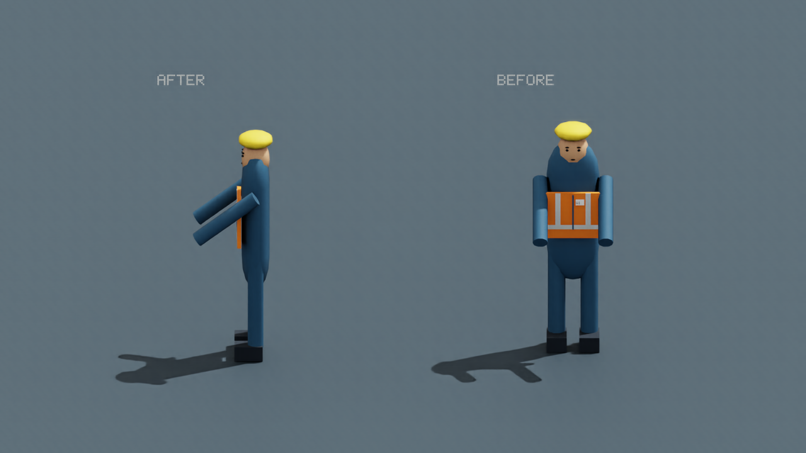
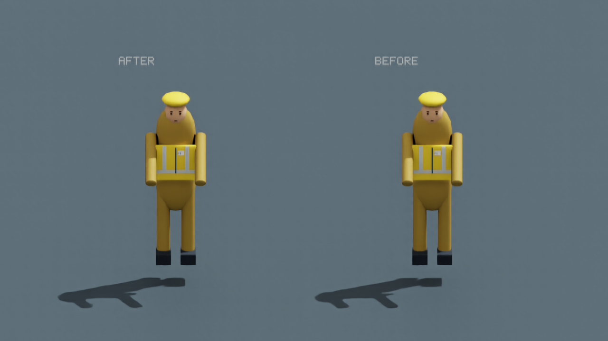
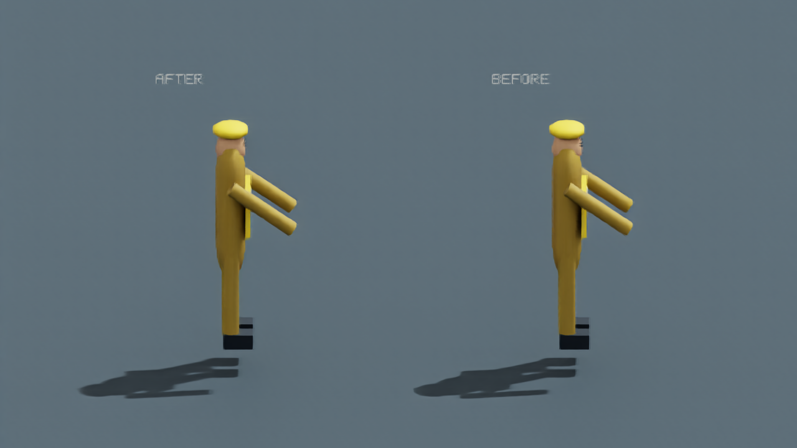
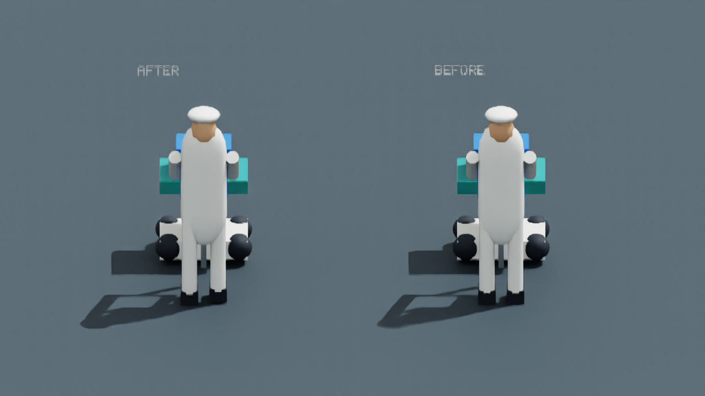
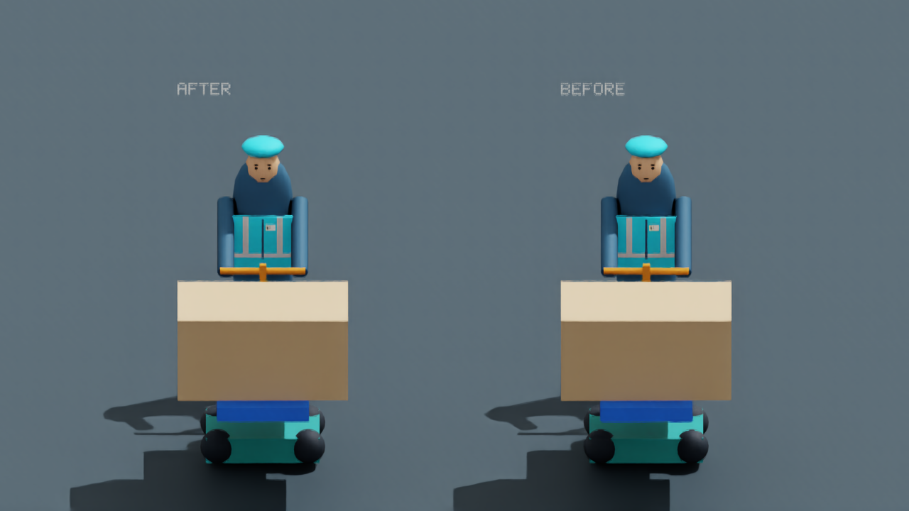
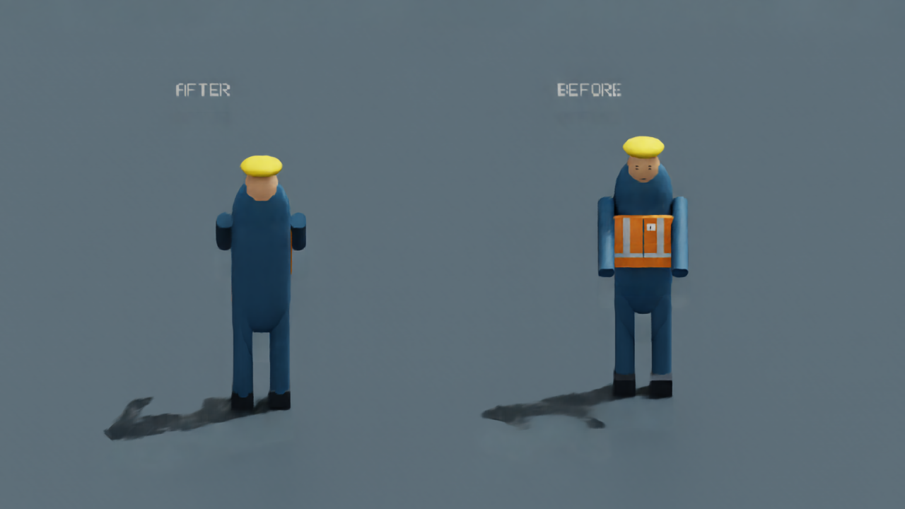
贴图随USD携带，使用相对资源路径；以下为迁移后实际Kit截图。
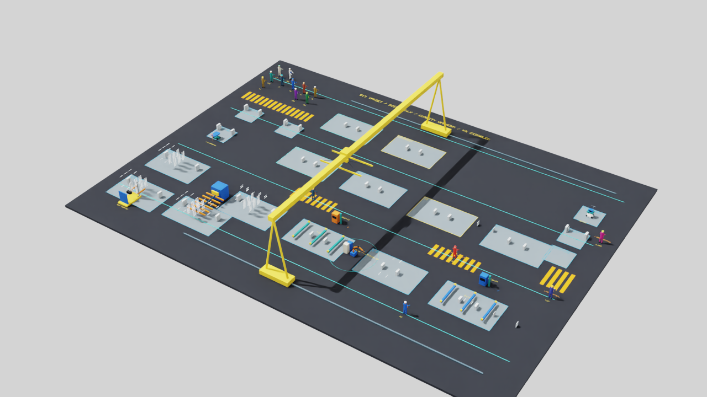
完整审阅、工作判据及拟发布范围